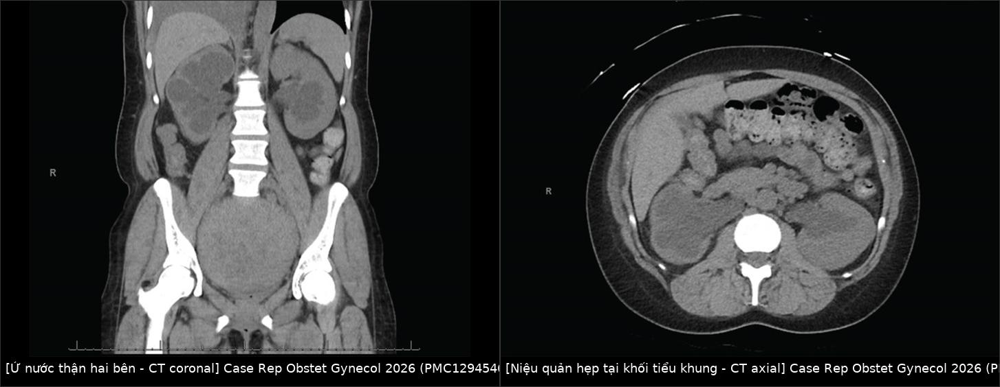
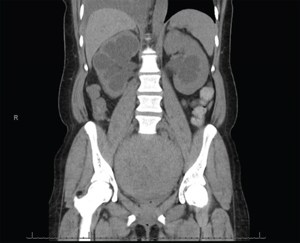
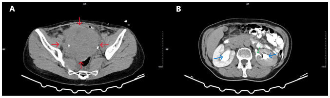
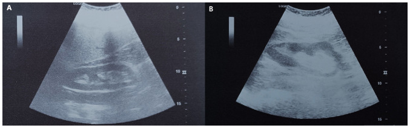

1620 — Ứ nước thận & urinoma do khối tiểu khung lành tính ở nữ / Hydronephrosis and urinoma caused by benign pelvic masses
Tags: pattern:u-nuoc-than pattern:urinoma vung:than-nieu-quan vung:tieu-khung protocol:CT-tinh-mach protocol:MRI-chau protocol:stent-nieu-quan incidentaloma:u-nuoc-than
Mức chắc chắn (certainty): tổng hợp y văn (literature synthesis) — không có thử nghiệm lâm sàng nào về "khối tiểu khung lành tính gây ứ nước thận"; số liệu lấy từ 2 ca nguyên văn có ảnh (PMC12329397, PMC12945467), 1 loạt 5 ca về bảo vệ niệu quản (PMC13222505) và các nghiên cứu hồi cứu về tần suất (dẫn trong PMC12945467). Câu nào là suy luận từ bằng chứng gián tiếp được ghi [suy luận].
1. Tổng quan bệnh học – cơ chế hình ảnh
- Giải phẫu quyết định vị trí tắc: niệu quản dài 25–30 cm, có 3 chỗ hẹp sinh lý — khúc nối bể thận–niệu quản (ureteropelvic junction, UPJ), chỗ bắt chéo động mạch chậu ở bờ tiểu khung (pelvic brim) và khúc nối niệu quản–bàng quang (ureterovesical junction, UVJ). Một khối lành tính kẹt trong tiểu khung (u xơ cổ tử cung, u xơ dây chằng rộng, u buồng trứng, tử cung sa) thường chèn ép niệu quản đúng ở bờ tiểu khung, nên ứ nước xuất hiện hai bên dù khối chỉ một bên.
- TẠI SAO ứ nước lại "im lặng": tắc từ từ → áp lực trong lòng niệu quản tăng dần, nhưng thành niệu quản và bể thận giãn ra trước (theo Laplace, sức căng thành = áp lực × bán kính), nên áp lực truyền lên nhu mô thận bị "đệm" bớt. Hệ quả: không đau quặn (đau chỉ xuất hiện khi tắc cấp, áp lực tăng nhanh) và creatinine có thể còn bình thường dù ứ nước nặng. Vì vậy creatinine mới là "chuông báo" chứ không phải triệu chứng.
- TẠI SAO thành urinoma: khi áp lực bể thận vượt sức chịu của các đài thận (fornix — nơi thành mỏng nhất), nước tiểu thoát ra khoang quanh thận → urinoma quanh thận (perinephric urinoma). Trên CT có cản quang thì bài tiết, dấu hiệu chốt là thoát thuốc cản quang ra ngoài đài thận + biến dạng hình "chén" (cup-shaped) của đài trên/dưới — đúng mô tả ca PMC12329397.
- TẠI SAO phân biệt được bằng HU: urinoma là nước tiểu → 0–20 HU, không vách tăng ngấm, không có mạch máu trong tổn thương; máu tụ bán cấp 40–70 HU; áp-xe có vách dày tăng ngấm viền + khí bên trong. Đây là lý do không cần chọc hút để "xem dịch gì" ở ca điển hình.
- Ngưỡng định lượng về tần suất (đọc kỹ vì hay bị bỏ qua):
- Hồi cứu 216 phụ nữ có u xơ (Jamaica, 5 năm): 14,35% có ứ nước thận; trong số đó 61,9% có chức năng thận bình thường; chỉ 1 ca suy thận giai đoạn cuối (dẫn trong PMC12945467).
- Nghiên cứu Nigeria 114 phụ nữ có u xơ có triệu chứng: bệnh niệu quản tắc nghẽn 22,8%, bệnh thận do tắc 10,5%, ứ nước hai bên 4,4% (dẫn trong PMC12945467).
- U xơ cổ tử cung chỉ chiếm 0,6% tổng số u xơ tử cung; loại "khổng lồ" được định nghĩa đường kính > 15 cm (PMC12329397).
- Số liệu từ 2 ca nguyên văn:
- Ca 1 (PMC12329397): nữ 51 tuổi, bí tiểu phải đặt sonde, u xơ cổ tử cung 16 × 12 × 10 cm trên CT (16,5 × 12,5 × 11 cm trên MRI), ứ nước hai bên, urinoma quanh thận trái; creatinine lúc vào 0,75 mg/dL (bình thường 0,40–1,10) — tức ứ nước nặng mà xét nghiệm thận vẫn bình thường.
- Ca 2 (PMC12945467): nữ 33 tuổi, u xơ hồi cứng 19,5 cm, creatinine 4,0 mg/dL (nền cũ 0,6 mg/dL), tăng huyết áp mới 164/110 mmHg; đặt PCN hai bên → creatinine 2,9 mg/dL; mổ bóc u xơ; 6 tuần sau còn 1,7 mg/dL — tức đã có phần tổn thương thận không hồi phục.
2. Mẫu hình + chẩn đoán phân biệt theo VỊ TRÍ TẮC (Gamut)
Mẫu hình là "bể thận – niệu quản giãn + một khối tiểu khung". Việc đầu tiên không phải đo độ giãn mà là tìm mức tắc: tắc càng thấp thì niệu quản giãn càng dài.
- Tắc ở bờ tiểu khung, do chèn ép từ ngoài (extrinsic) — nhóm của bài này:
- U xơ cổ tử cung (thể trong cổ/ngoài cổ), u xơ dây chằng rộng, u xơ ký sinh sau morcellation.
- Khối buồng trứng lành: u sợi (fibroma), u nhầy lớn, endometrioma lớn, nang cạnh phần phụ xoắn.
- Sa tạng chậu nặng (sa tử cung độ III–IV kéo niệu quản xuống dưới bờ tiểu khung).
- Xơ hóa sau phúc mạc, hạch chậu, lạc nội mạc tiểu khung.
- Tắc trong lòng niệu quản (intrinsic): sỏi, ung thư biểu mô niệu mạc (transitional cell carcinoma), hẹp sau xạ, cục máu sau chảy máu.
- Tắc ở UVJ/bàng quang: u bàng quang, phì đại tuyến tiền liệt (bệnh nhân nam), bàng quang thần kinh, sa sinh dục làm gập niệu quản.
- "Giãn" KHÔNG do tắc (bẫy hay gặp nhất): bể thận ngoài xoang (extrarenal pelvis) — bể thận toàn bộ nằm ngoài xoang thận; nang cạnh bể thận (parapelvic cyst); thai kỳ (giãn sinh lý, phải > trái, do progesterone + tử cung chèn); trào ngược bàng quang–niệu quản; giãn sau thuốc lợi niệu.
- Gamut của urinoma: (1) tắc (bài này — vỡ đài do áp lực); (2) chấn thương thận; (3) sau can thiệp (PCN, tán sỏi, mổ); (4) vỡ đài do sỏi (forniceal rupture) — hay gặp ở bệnh nhân đau quặn thận đột ngột hết đau.
- Gợi nhớ theo tầng: trên bờ tiểu khung → nghĩ khối tiểu khung; dưới bờ tiểu khung → nghĩ UVJ/bàng quang; giãn cả niệu quản đến bàng quang mà không thấy khối → nghĩ bàng quang thần kinh/trào ngược.
3. Bảng so sánh phân biệt (ma trận đối chiếu)
3A. Nguyên nhân ứ nước thận ở nữ có khối tiểu khung
| Thực thể (entity) | Hình ảnh điển hình | Chốt vào (rule-in) | Chốt loại (rule-out) | Gợi ý xác nhận |
|---|---|---|---|---|
| U xơ cổ tử cung khổng lồ | Khối đặc, bờ rõ, giãn mạch nuôi bao quanh, đẩy cổ tử cung lệch; ứ nước hai bên | Khối tâm điểm ở cổ tử cung + cổ tử cung bị xoá/đẩy + ứ nước hai bên | Cổ tử cung còn nguyên và khối tách rời khỏi cổ → nghĩ khối khác | MRI chậu T2: khối giảm tín hiệu, vỏ giả; đo 3 chiều |
| U xơ dây chằng rộng | Khối đẩy tử cung sang bên, niệu quản bị đẩy ra ngoài/ra trước, tách khỏi buồng tử cung | Mất dấu hiệu "liên tục với cơ tử cung" + đẩy niệu quản | Còn cầu mô cơ nối với thân tử cung → u xơ trong tử cung | MRI + CT có thì bài tiết để vẽ đường niệu quản |
| Khối buồng trứng lành lớn | Nang/u đặc–hỗn hợp xuất phát từ phần phụ, tách khỏi tử cung; u sợi T2 rất tối | Tách khỏi tử cung + không có "vỏ giả" mạch nuôi kiểu u xơ | Có cầu nối cơ tử cung → u xơ | Siêu âm đầu dò âm đạo + MRI; CA-125 bình thường không loại trừ |
| Sa sinh dục nặng | Cổ tử cung/thành âm đạo sa tới hoặc qua môn âm đạo; niệu quản gập ở bờ tiểu khung | Khám thấy sa + ứ nước giảm khi đỡ sa | Khối đặc trong tiểu khung → không phải sa | Khám phụ khoa; MRI động học sàn chậu |
| Sỏi niệu quản | Nốt cản quang > 200 HU, ± dấu hiệu viền mô mềm (tissue rim sign); không thấy khối tiểu khung | Sỏi cản quang dọc đường niệu quản + ứ nước cùng bên | Có khối tiểu khung giải thích đủ mức tắc → vẫn phải loại sỏi phối hợp | CT không cản quang lát mỏng 1–3 mm |
| Ung thư niệu mạc / hẹp do xạ | Dày thành niệu quản, khối trong lòng, đoạn hẹp dài, bờ không đều | Tổn thương trong lòng + bờ không đều + tiền sử xạ | Bờ nhẵn, hẹp ngắn, có khối chèn ngoài → lành tính | CT niệu đồ (CT urography) thì bài tiết; nội soi + tế bào học |
| Ứ nước sinh lý thai kỳ | Giãn bể thận phải > trái, giảm dần sau sinh, không có khối chèn | Có thai + giãn phải > trái + hết sau sinh | Giãn không đối xứng bất thường, có sỏi/khối → không phải sinh lý | Siêu âm thận; theo dõi sau sinh 6–12 tuần |
3B. Dịch quanh thận: urinoma và các "bản sao"
| Thực thể (entity) | Hình ảnh điển hình | Chốt vào (rule-in) | Chốt loại (rule-out) | Gợi ý xác nhận |
|---|---|---|---|---|
| Urinoma do tắc | Túi dịch quanh thận 0–20 HU, không vách, thoát cản quang ở thì bài tiết | Thuốc cản quang ra ngoài đài thận + biến dạng đài hình chén | Dịch có vách tăng ngấm, có khí, bệnh nhân sốt → áp-xe | CT có thì bài tiết 5–10 phút; theo dõi siêu âm |
| Máu tụ quanh thận | 40–70 HU (bán cấp), không ngấm, có thể có viền giảm tín hiệu | HU cao + tiền sử chấn thương/mổ | HU 0–20 và có thoát cản quang → urinoma | CT không cản quang so với thì muộn |
| Nang cạnh bể thận | Dịch 0–10 HU, bờ mỏng nhẵn, tách khỏi đài thận, không thay đổi theo thì | Bờ mỏng + không thông với hệ thống đài bể thận | Thấy đường thông hoặc thoát cản quang → urinoma | CT thì bài tiết; MRI T2 |
| Áp-xe quanh thận | Dịch 10–25 HU + vách/viền dày tăng ngấm + khí, dày mỡ quanh thận | Sốt + CRP tăng + viền tăng ngấm | Không sốt, không viền, dịch thuần nhất → urinoma vô khuẩn | Cấy dịch nếu chọc; kháng sinh + dẫn lưu |

Trái: CT coronal — hai bể thận giãn, đài thận tù, nhu mô vỏ mỏng dần (phải > trái). Phải: CT axial — niệu quản hẹp dần tại mức khối u xơ trong tiểu khung. Nguồn: Case Rep Obstet Gynecol 2026 (PMC12945467), CC BY 4.0. Ảnh ghép letterbox, giữ nguyên tỷ lệ.4. Protocol chụp + ngưỡng xử trí
4.1 Chụp gì, theo thứ tự nào
- Siêu âm thận – đường tiết niệu + siêu âm đầu dò âm đạo: đo đường kính trước–sau bể thận (AP renal pelvis), độ dày nhu mô vỏ, và tìm khối tiểu khung. Lưu ý: với khối > 15 cm, siêu âm đầu dò âm đạo và siêu âm bụng có thể không đánh giá được (đúng như ca PMC12329397) — đừng coi "siêu âm không rõ" là "không có bệnh".
- CT bụng–tiểu khung: không cản quang để tìm sỏi + mức tắc; có cản quang (thì tĩnh mạch + thì bài tiết 5–10 phút) để xác nhận urinoma và đánh giá khối. Lát 1–3 mm.
- MRI tiểu khung (T2, T1, ± tiêm): "bản đồ u xơ" trước mổ — số u, vị trí, liên quan cổ tử cung, đường đi niệu quản, và phân biệt u xơ với u buồng trứng.
- Xét nghiệm bắt buộc: creatinine + eGFR, kali, CRP/bạch cầu, cấy nước tiểu. Creatinine bình thường KHÔNG loại trừ ứ nước nặng (61,9% ca trong loạt 216 có chức năng thận bình thường).
4.2 Ngưỡng quyết định
- Giải áp trước mổ khi: tắc hai bên, creatinine tăng so với nền, kali cao, nhiễm trùng đường tiết niệu/viêm thận–bể thận, hoặc đau/urinoma to lên.
- Thứ tự: stent niệu quản ngược dòng trước, PCN khi stent thất bại. Stent vừa giải áp vừa bảo vệ niệu quản trong mổ. Nếu đặt stent thất bại, đó không phải "thủ thuật hỏng" mà là dấu hiệu niệu quản bị biến dạng nặng → tăng cảnh giác trong mổ, cân nhắc PCN (loạt 5 ca PMC13222505).
- Urinoma nhỏ, không nhiễm trùng, không chèn ép → theo dõi, không dẫn lưu; ca PMC12329397 không cần can thiệp niệu khoa nào cho urinoma, chỉ đặt stent và theo dõi.
- Mổ khối (bóc u xơ / cắt tử cung) là điều trị triệt để: gần như mọi ca trong y văn hết ứ nước và cải thiện chức năng thận sau mổ; tổn thương thận chỉ tồn tại khi mổ muộn hoặc có bệnh thận nền (PMC12945467).
- Theo dõi sau mổ: rút stent 3 tháng sau khi siêu âm thận bình thường (PMC12329397); đo lại creatinine lúc 6 tuần và 6 tháng — ca PMC12945467 còn 1,7 mg/dL (so nền 0,6) dù đã giải áp.
4.3 Sơ đồ quyết định
flowchart TD
A[Khối tiểu khung lành tính + ứ nước thận] --> B{Giãn thật do tắc?}
B -->|Không| B1[Bể thận ngoài xoang, nang cạnh bể thận, thai kỳ sinh lý]
B -->|Có| C{Creatinine tăng, kali cao, nhiễm trùng, hai bên?}
C -->|Không| D[Mổ khối + cân nhắc stent dự phòng trong mổ]
C -->|Có| E[Giải áp trước: stent ngược dòng]
E -->|Thất bại hoặc có mủ| F[PCN qua da]
E -->|Thành công| G[Ổn định rồi mổ khối]
F --> G
G --> H[Sau mổ: rút stent 3 tháng, siêu âm thận + creatinine 6 tuần và 6 tháng]
5. Biến thể bình thường và cạm bẫy
- Bể thận ngoài xoang (extrarenal pelvis) là biến thể hay bị đọc thành "ứ nước độ I" — bể thận to nhưng đài thận không giãn, nhu mô không mỏng, không có khối chèn. Chốt bằng thì bài tiết: thuốc xuống bể thận ngoài xoang bình thường, không ứ đọng.
- "Creatinine bình thường = thận ổn" là cạm bẫy chết người: 61,9% ca ứ nước trong loạt 216 ca có chức năng thận bình thường; ca 51 tuổi có urinoma mà creatinine vẫn 0,75 mg/dL.
- Satisfaction of search: thấy khối tiểu khung là dừng lại — bỏ sót sỏi niệu quản phối hợp, ung thư niệu mạc, hoặc urinoma (chỉ thấy ở thì bài tiết).
- Urinoma vô khuẩn không triệu chứng: chọc hút "cho chắc" có thể đưa nhiễm trùng vào khoang sau phúc mạc → chỉ chọc khi nghi áp-xe, cần chẩn đoán mô học, hoặc urinoma chèn ép.
- Thai kỳ: ứ nước sinh lý phải > trái, xuất hiện từ tam cá nguyệt 2 và hết sau sinh; đừng can thiệp chỉ vì "thấy giãn".
- Sau mổ: ứ nước hết nhưng creatinine có thể không về nền — phải theo dõi dài hạn, đừng tuyên bố "khỏi" chỉ vì siêu âm đẹp.
- Cạm bẫy mặt cắt: trên CT axial, niệu quản đi trước động mạch chậu ở bờ tiểu khung; muốn chứng minh mức tắc phải lần theo niệu quản từ thận xuống trên chuỗi lát, không đoán theo một lát.
6. Tự lượng giá — Blind Quiz
Ca 1 — Nữ 33 tuổi, rong kinh nặng + tiểu nhiều lần, huyết áp 164/110 mmHg, creatinine 4,0 mg/dL.

- Câu hỏi: (1) Dấu hiệu chính? (2) Mức tắc ở đâu? (3) Ba chẩn đoán phân biệt? (4) Bước tiếp theo trước khi mổ?
Bấm để hiện đáp án (findings + chẩn đoán)
- Dấu hiệu: hai bể thận – đài thận giãn nặng, phải > trái, nhu mô vỏ phải mỏng (tắc mạn); niệu quản giãn xuống tới mức khối u xơ trong tiểu khung.
- Mức tắc: bờ tiểu khung, do u xơ 19,5 cm chèn ép hai niệu quản.
- Chẩn đoán: ứ nước–niệu quản hai bên do u xơ tử cung lớn, biến chứng suy thận cấp–mạn (creatinine 4,0 so nền 0,6 mg/dL).
- Bước tiếp theo: PCN hai bên giải áp → creatinine 2,9 mg/dL, rồi mổ bóc u xơ. Sáu tuần sau creatinine 1,7 mg/dL (còn tổn thương không hồi phục).
- Nguồn: Case Rep Obstet Gynecol 2026 (PMC12945467), CC BY 4.0.
Ca 2 — Nữ 51 tuổi, bí tiểu, đau lưng hai bên; CT có cản quang.

- Câu hỏi: Mũi tên xanh và mũi tên xanh lá chỉ gì? Vì sao creatinine vẫn bình thường? Có cần dẫn lưu urinoma không?
Bấm để hiện đáp án (findings + chẩn đoán)
- A: khối đặc lớn 16 × 12 × 10 cm chiếm toàn tiểu khung, bờ rõ, có vùng thoái hóa nang, nguồn gốc cổ tử cung (mũi tên đỏ).
- B: mũi tên xanh = giãn đài–bể thận hai bên; mũi tên xanh lá = thoát cản quang ra khoảng quanh thận trái = urinoma, kèm biến dạng đài thận hình chén.
- Vì sao creatinine bình thường (0,75 mg/dL): tắc mạn từ từ, thận còn bù; đây là lý do không được dựa vào creatinine để loại trừ.
- Urinoma: nhỏ, không sốt, không chèn ép → theo dõi, không dẫn lưu; đặt stent niệu quản trước mổ, cắt tử cung toàn bộ + phần phụ; rút stent sau 3 tháng khi siêu âm thận bình thường.
- Nguồn: Med Int (Lond) 2025 (PMC12329397), CC BY 4.0.
Ca 3 — Cùng bệnh nhân ca 2, ba tháng sau rút stent.

- Câu hỏi: Hình ảnh nói gì về kết quả điều trị? Còn cần theo dõi gì?
Bấm để hiện đáp án
- Hai thận trở về hình thái bình thường, không còn giãn đài–bể thận, không còn urinoma quanh thận.
- Vẫn cần creatinine (6 tuần – 6 tháng) và siêu âm kiểm tra vì có thể còn tổn thương thận không hồi phục (xem ca 1).
- Nguồn: Med Int (Lond) 2025 (PMC12329397), CC BY 4.0.
Bài liên quan chéo
- 531 – U xơ cổ tử cung, u xơ ký sinh & u xơ dây chằng rộng
- 582 – Biến chứng tiêu hóa–niệu sau xạ trị phụ khoa: viêm trực tràng xạ, rò, hẹp niệu quản
- 189 – Đánh giá trước ghép thận ở bàng quang thần kinh
- 691 – Sỏi bàng quang & sỏi quanh catheter ở trẻ bàng quang thần kinh
- 164 – Nang thận ADPKD & biến chứng
- 500 – Tổng quan hệ Vú & Sản Phụ khoa
Không dùng để chẩn đoán độc lập khi chưa có người hướng dẫn.